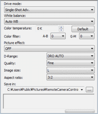

Setup
The setup panel of the Remote Camera Control window allows you to change shooting settings, the destination folder where the captured images are saved, and other setting items. For detailed settings, refer to the camera’s manual.
For more information, refer to Remote Camera Control Help Guide (Additional Help Online).

| Drive mode |
You can select the drive mode from the drop-down list. |
| White balance |
You can select the white balance mode from the drop-down list. |
| Color temperature |
This option is available when [Color Temperature] is selected for white balance. Click the up/down arrow buttons to set the color temperature. |
| Color filter |
This option is available when [Color Temperature] is selected for white balance. Select the desired color filter from the drop-down list. |
| D-Range Optimizer |
You can select the D-Range Optimizer mode. Select the desired D-Range Optimizer mode that the camera supports from the drop-down list. |
| Picture Effect |
You can select the Picture Effect mode from the drop-down list. For more information, refer to the camera’s manual. |
| Quality |
You can select the desired file format and picture quality to be used when saving a captured image on your computer from the drop-down list. |
| Image size |
You can select the desired image size to be used when saving a still image from the drop-down list. This option may be disabled, depending on the file format setting. |
| Aspect ratio |
You can select the aspect ratio to be used when saving a still image from the drop-down list. For more information, refer to the camera’s manual |
| Save in |
You can select the destination folder to be used when saving captured images on your computer from the drop-down list. To save in another folder, click [Select a Folder] and select the desired folder from the dialog box displayed. You can specify a folder in the PC hard disk or storage media in the removable
disk. |